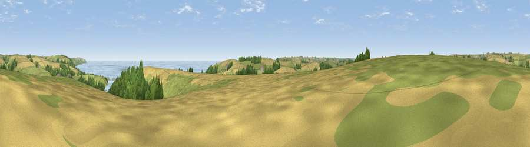

Viewpoint near Stokenham
#4914 in England · top 13% of its area beats it · near StokenhamThe view, rendered

A 360° render of this exact spot computed from the terrain model, tree cover and land cover — summer colours, afternoon light, calibrated against photographs of famous viewpoints. Real trees, hedges and buildings will differ in detail.
The panorama
Grey silhouette: terrain skyline in each direction (720 bearings, Earth curvature and refraction included). Dashed green: skyline with trees (+15 m) and buildings (+8 m) as obstacles. Blue strip: how far the ground is visible on each bearing.
Where the view opens
Wedge length = distance to the farthest visible ground on that bearing (vegetation-aware). Rings at 10, 25 and 50 km.
What fills the view
37% cropland · 34% grassland · 17% water · 11% woodland
Angular shares of the visible panorama (visual magnitude), not map area. Landscape diversity 0.57 (0–1 Shannon).
Key numbers
More beautiful places nearby
The staircase of upgrades: each row has a higher view potential than everything closer. Driving times are estimates from straight-line distance, calibrated against real road routing — check an actual route before setting out.
| Place | Direction | Drive | Score |
|---|---|---|---|
| Viewpoint near Stokenham | E · 1 km | ~2 min | 74.0 |
| Viewpoint near Torcross | SSE · 2 km | ~6 min | 76.2 |
| Viewpoint near Strete | NE · 4 km | ~9 min | 76.5 |
| Viewpoint near Beesands | SSE · 4 km | ~9 min | 80.9 |
| Viewpoint near South Hallsands | S · 6 km | ~13 min | 81.2 |
| Viewpoint near South Hallsands | SSE · 7 km | ~14 min | 82.5 |
| Viewpoint near East Prawle | SSW · 8 km | ~17 min | 83.3 |
| Viewpoint near East Prawle | SSW · 8 km | ~17 min | 84.6 |
50.28053, -3.67399 · source: screening · position refined by local search. Computed location — check access rights before visiting.